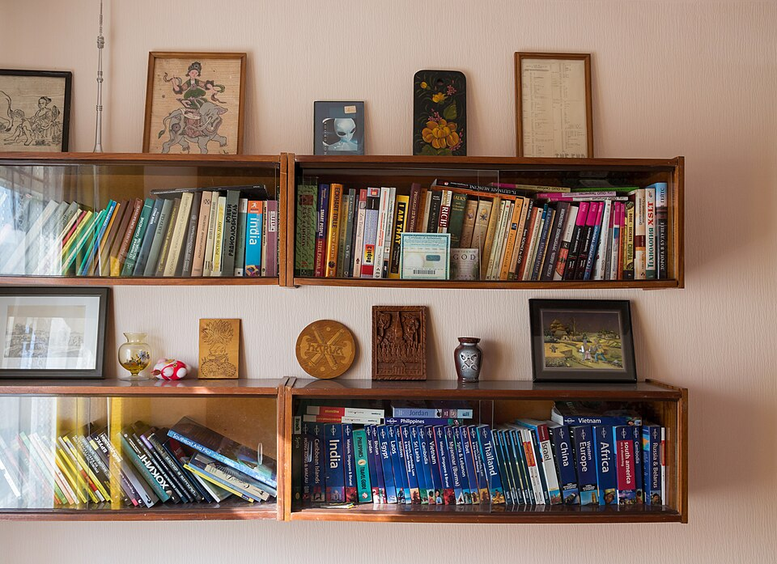

Celuc Libri è una libreria indipendente che per decenni è stata un punto di riferimento per studenti, lettori e abitanti del quartiere. Libri, cartoleria, caffè e pacchi, tutto sotto lo stesso tetto.
Fa parte di Librerie Indipendenti Milano e dell'Albo delle Librerie Milanesi di Quartiere.